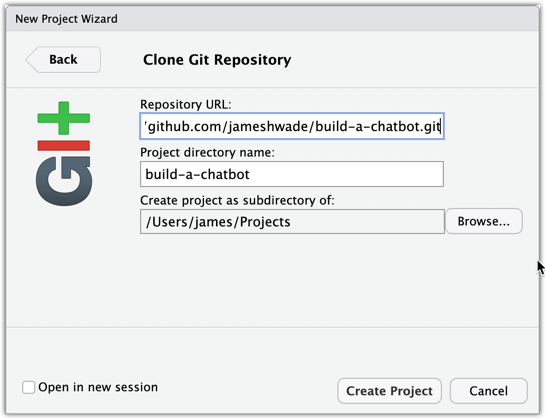

Build a Chatbot with OpenAI, Shiny, and RStudio
Using GitHub Copilot, ChatGPT, and more in your favorite IDE
The Plan for Today
My plan is to talk as little as possible and let you all play with the tools. I’ll give a brief overview of the tools and then we’ll jump into an interactive workshop where we will build a chatbot.
It may take a few minutes to setup your environment. The best way to do this is to clone this repo and open the project in RStudio. Here’s a link to the repo: build-a-chatbot.
Clone Workshop Materials
There are two easy ways to clone the repo. You can use RStudio built-in buttons or the {usethis} package.
To clone the repo, open RStudio and go to File > New Project > Version Control > Git and paste in the following URL: https://github.com/JamesHWade/build-a-chatbot
You can also use the following code to clone the packages we’ll be using today.
# install.packages("usethis")
require(usethis)
create_from_github("jameshwade/build-a-chatbot",
fork = FALSE)This repo uses {renv} to help create a reproducible environment. When you clone and open the package in RStudio, you should be prompted to install the packages. If not, you can run the following code to install the packages.
# install.packages("renv")
renv::restore()Create Accounts and Set API Keys
With {gptstudio} and {gpttools}, you can use any of seven AI services. You’ll need to create an account with the service you want to use. Here’s a list of the services and links to the documentation and setup instructions:
| AI Service | Models | Documentation |
|---|---|---|
| OpenAI | gpt-4-turbo, gpt-4, gpt-3.5-turbo (latest models) | OpenAI API Docs |
| HuggingFace | various | HF Inference API Docs |
| Anthropic | claude-2.1, claude-instant-1.2 | Anthropic API Docs |
| Ollama | mistral, llama2, mixtral, phi (latest models) | Ollama API Docs |
| Perplexity | pplx-7b-chat, pplx-70b-chat, pplx-7b-online, pplx-70b-online, llama-2-70b-chat, codellama-34b-instruct, mistral-7b-instruct, and mixtral-8x7b-instruct | Perplexity API Docs |
| Google AI Studio | Gemini and Palm (legacy) | Google AI Studio Docs |
| Azure OpenAI | gpt-4, gpt-3.5-turbo (latest models) | Azure OpenAI API Docs |
Follow instructions for your chosen service to create an account and get an API key. You’ll need to add the API key to your .Renviron file. Here are instructions for each service:
Creating an OpenAI Account
- Visit OpenAI’s website and sign up for an account.
- Follow the instructions to verify your account.
Creating an OpenAI API Key
- Once logged in, navigate to the API section in your account settings.
- Follow the instructions to create a new API key. More detailed steps can be found in OpenAI’s API documentation.
Setting the OpenAI API Key in .Renviron
To modify the .Renviron file:
require(usethis)
edit_r_environ()For a persistent setting, add the following line to .Renviron, replacing "<APIKEY>" with your actual API key:
OPENAI_API_KEY="<APIKEY>"Save the file and restart your R session for the changes to take effect.
Caution: Ensure .Renviron is included in your .gitignore file to avoid exposing your API key with version control systems like GitHub or GitLab.
Important Note: OpenAI API requires valid payment details in your OpenAI account to function. This is a restriction imposed by OpenAI and is unrelated to this package.
Creating a HuggingFace Account
- Visit HuggingFace’s website and sign up for an account.
- Complete the account verification process.
Creating a HuggingFace API Key
- After logging in, go to your account settings.
- Find the section for API keys and create a new one. Detailed guidance is available in HuggingFace’s API documentation.
Setting the HuggingFace API Key in .Renviron
To modify the .Renviron file:
require(usethis)
edit_r_environ()For a persistent setting, add the following line to .Renviron, replacing "<APIKEY>" with your actual HuggingFace API key:
HF_API_KEY="<APIKEY>"Save the file and restart your R session for the changes to take effect.
Caution: Remember to include .Renviron in your .gitignore file to prevent exposing your API key, especially if using version control systems like GitHub or GitLab.
Creating an Anthropic Account
- Go to the Anthropic website and sign up.
- Verify your account as instructed.
Creating an Anthropic API Key
- Log into your Anthropic account and navigate to the API section.
- Create an API key following their guidelines. Check Anthropic’s API documentation for more details.
Setting the Anthropic API Key in .Renviron
To modify the .Renviron file:
require(usethis)
edit_r_environ()For a persistent setting, add the following line to .Renviron, replacing "<APIKEY>" with your actual Anthropic API key:
ANTHROPIC_API_KEY="<APIKEY>"Save the file and restart your R session for the changes to take effect.
Caution: Ensure .Renviron is not exposed if using version control systems.
The ollama service allows you to run open source LLMs locally, providing a command line interface and an API. By wrapping the later, we can use it within our chat app.
You can run ollama in any platform as a docker container. The following code runs the CPU-only version:
docker run -d -v ollama:/root/.ollama -p 11434:11434 --name ollama ollama/ollamaThis code:
- pulls the latest ollama image from the ollama hub (
ollama/ollama) - exposes the ollama API in
http://localhost:11434(-p 11434:11434) - sets up the ollama volume, to be used in the “/root/.ollama” path inside the container. this will allow you to update the container later without losing your already downloaded models. (
-v ollama:/root/.ollama) - assigns the name “ollama” to the container (
--name ollama) - runs the container in detached mode (
docker run -d)
You can see more docker options in the official blog post.
Before using the service, you need to pull a model. Run the following code inside your container to pull llama2:
ollama pull llama2Check the ollama library to see more models. For more advanced install options, check the official documentation.
By default, the chat addin will use http://localhost:11434 to locate the ollama API. You can customize this by setting up the OLLAMA_HOST environmental variable with usethis::edit_r_environ().
An Example with Ollama
Here is a short video showing you how to get started with ollama. It assumes that you have already installed docker. See the docker installation guide for more information.

Creating an Perplexity Account
- Go to the Perplexity website and sign up.
- Verify your account as instructed.
Creating an Perplexity API Key
- Log into your Perplexity account and navigate to the API documentation.
- Create an API key following their guidelines. Check Perplexity’s API documentation for more details.
Setting the Perplexity API Key in .Renviron
To modify the .Renviron file:
require(usethis)
edit_r_environ()For a persistent setting, add the following line to .Renviron, replacing "<APIKEY>" with your actual Perplexity API key:
PERPLEXITY_API_KEY="<APIKEY>"Save the file and restart your R session for the changes to take effect.
Caution: Ensure .Renviron is not exposed if using version control systems.
Creating an Account in Google’s AI Studio
- Visit Google’s AI Studio website and sign up.
- Complete the verification process.
Accessing Google PALM API
- In your Google Cloud Console, enable the PALM API.
- Create an API key as per the instructions in Google’s API documentation.
Setting the Google AI Studio API Key in .Renviron
To modify the .Renviron file:
require(usethis)
edit_r_environ()For a persistent setting, add the following line to .Renviron, replacing "<APIKEY>" with your actual Google PALM API key:
PALM_API_KEY="<APIKEY>"Save the file and restart your R session for the changes to take effect.
Caution: Be careful not to expose .Renviron in public repositories or version control systems to protect your API key.
To configure gptstudio to work using Azure OpenAI service, you need to provide some configuration details in your .Renviron file. Specifically, gptstudio looks for five environment variables:
- AZURE_OPENAI_TASK
- AZURE_OPENAI_ENDPOINT
- AZURE_OPENAI_DEPLOYMENT_NAME
- AZURE_OPENAI_KEY
- AZURE_OPENAI_API_VERSION
Here’s how you can add these details to your .Renviron file:
- Locate your .Renviron file with
usethis::edit_r_environ(). - Add environment variable details: Add a new line for each variable you need to set in the following format: VARIABLE_NAME=“YOUR_VALUE”. Replace VARIABLE_NAME with the name of the environment variable and YOUR_VALUE with the actual value that you want to set. For example, to set the API key you would have a line like this:
AZURE_OPENAI_KEY="your_actual_key_goes_here"You need to do this for each of the environment variables expected by the function. Your .Renviron file should look something like this:
AZURE_OPENAI_TASK="your_task_code"
AZURE_OPENAI_ENDPOINT="your_endpoint_url"
AZURE_OPENAI_DEPLOYMENT_NAME="your_deployment_name"
AZURE_OPENAI_KEY="your_api_key"
AZURE_OPENAI_API_VERSION="your_api_version"- Save and Close .Renviron: After adding your environment variables, save your .Renviron file and close it. You will need to restart your R session to make sure the new environment variables are loaded properly.
Remember to replace your_task_code, your_endpoint_url, your_deployment_name, your_api_key, and your_api_version with your actual Azure OpenAI details. You can retrieve these details from your Azure OpenAI service account. For more information about Azure OpenAI configuration, refer to the Microsoft quickstart guide.
Suggested Resources
- GitHub Copilot in RStudio, it’s finally here! by Tom Mock, Product Manager of RStudio Workbench
{gptstudio}- An R package that integrates LLMs into RStudio{gpttools}- A sister package to{gptstudio}that allows RAG to supplement LLMs{chattr}- A package from the mlverse team to integrates LLM’s with the RStudio by Edgar Ruiz, Posit Software Engineer